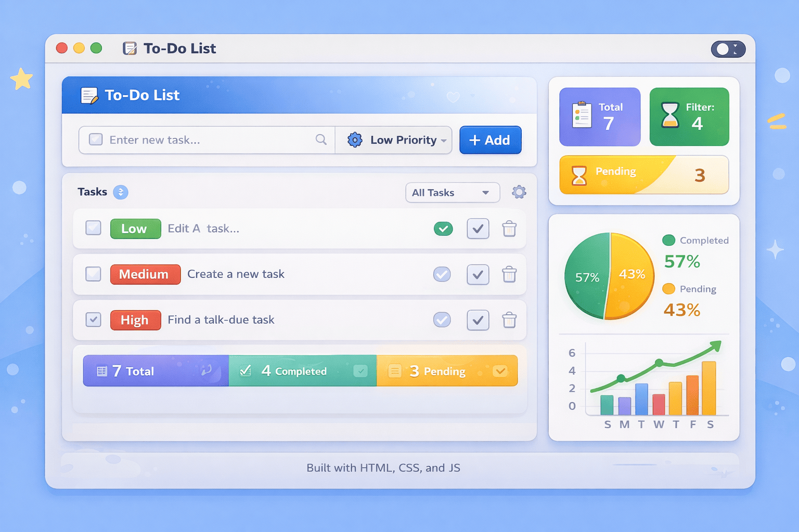

01
To-Do Web App
A fully responsive task management application that lets users add, delete, and mark tasks as complete. Built with clean vanilla JavaScript, CSS custom properties, and local storage for persistence. Focused on smooth UX and minimal design — a practical exercise in DOM manipulation and state management.